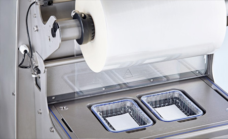

Чтобы обеспечить безопасную и правильную эксплуатацию машины, понадобиться провести профессиональную
наладку упаковочного оборудования, которую проводят специалисты компании AxisMetal. Они помогут
произвести монтаж, регулировку и тестирование агрегата в разных рабочих режимах, а также предлагают
консультацию для заказчика, направленную на обучение персонала пользованию трейсилером.
Пресс-формы для трейсилера: процесс изготовления

Специальные пресс-формы для трейсилера позволяют работать с разными по форме и размерам контейнерами для
будущей упаковки продукции. В процессе производства команда специалистов использует инструментальные
стали повышенной степени прочности, не подверженные отрицательному влиянию коррозии.
При создании пресс-формы для трейсилера мы проходим несколько подготовительных и обязательных этапов:
- Вместе с заказчиком идёт процесс составления подробной технической задачи (учитываем количество
форм, их материал, форму, размеры и прочее).
- Происходит разработка и дальнейшее согласование будущего дизайна.
- Происходит разработка и согласование конструкторской документации.
- Процесс изготовления пресс-формы.
- Проведение пуско-наладочных работ, в результате которых наш специалист выполняет установку формы в
упаковочное оборудование заказчика, консультирует по поводу дальнейшей эксплуатации машины.
- Предоставление гарантийного обслуживания.
В результате каждый клиент получает возможность приобрести необходимые пресс-формы для трейсилера
высокого качества.